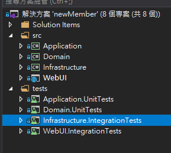
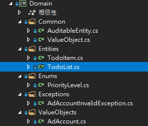
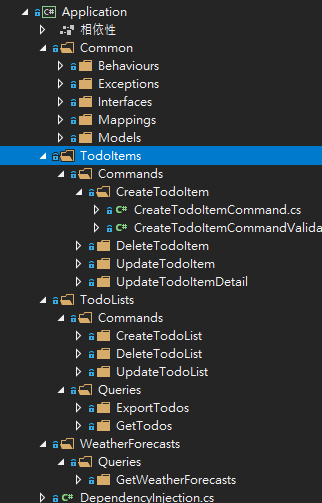

最近 CleanArchitecture 這名詞終於出現在我的雷達裡了，我知道這東西已經存在很久了，所以現在趕快將這一塊的基礎能力補上。好加在地是已經有好心人整理出一個 CleanArchitecture 的專案樣板，只要從中學習使用，應可學習到一些基本知識(應該)
工具
作者 Jason Taylor 建立一個 dotnet 用的專案範本，能讓我們快速的產生 CleanArchitecture ，Template 的 GitHub 網址在最後的參考資料有提供，但首先我們需要先將這一個範本工具安裝起來
1 | dotnet new --install Clean.Architecture.Solution.Template |
安裝完工具後，就可以來使用了
-
建立一個專案用的資料夾，並進入該資料夾後，執行下列指令
1
dotnet new ca-sln
-
執行完這個指令後，就會產生以下的資料夾架構

專案架構分析
Domain
跟 Domain 相關的東西都會放在這邊，包含 entities、enums、exceptions、interfaces、types，這部分需要將自己的 DDD 的知識補起來。

Common
AuditableEntity內包含建立與更新的時間及異動人員資訊，Entities資料夾內的Entity都有繼承這一個類別ValueObject: 這一個是 DDD 內的一個概念，更多的資訊可以在此找到，紀錄一下幾個特性- 無法被識別 (No identity)
- Immutable
Exceptions
自訂 Exceptions 類別，這方法在後續 logging 會有很幫助，也可以在處理 Exception 時減少重複程式碼的撰寫
Application
這一個資料夾內會撰寫整個應用程式的商業邏輯，只會相依在 domain layer 之上。在這一個階段也會定義一些需要在外部實做的服務介面，這表示 service interface 會在 Application 資料夾內定義，服務程式碼實做會在 Infrasturacuture 完成

而這一個專案架構，使用 Mediator (MediatR library) + CQRS 的模式，所以可以看到 Commands/Queries 的資料夾分類，而在 Coammnds 的內配合 MediatR 訊息傳遞的模式，會有 request 和 handler 的角色
1 | public partial class CreateTodoListCommand : IRequest<int> |
更多關於 MediatR 和 CQRS 的架構資訊可以在參考資料處找到
Infrasturcture
這一層是存取外部資源的部分，包含資料庫、檔案系統、其他的 API 服務等. 當然這些服務的介面都會在 Application 層定義
WebUI
對外的顯示介面，相依 Applicatin 及 Infrasturcture。由於整個專案架構是使用 Mediator 模式，所以在 API Controller 的地方，程式碼就會變得很單純，只要決定執行哪一個 command 即可
1 | public class TodoListsController : ApiController |
測試
除了 src 資料夾下的基本架構外，在 tests 裡也有相對應各專案的測試專案
小結
專案架構看似簡單，但藏在背後的原理卻很深奧的，有很多理論是需要深入學習的。希望能透過實做的方式，讓自己能理解相關的理論原理